流通
有若干方式進入流通功能。從館員介面的首頁中央有幾個連結可以借出、還入或轉移館藏。可從每個頁面左上方的連結或首頁中央，連結至完整的流通功能。
流通館藏之前應先處理相關的設定 整體系統偏好、基本參數 與 讀者 & 流通規則。
流通時，可使用以下的熱鍵，在螢幕上方快速搜尋盒的分頁間快速移動：
按著Alt+Q，進入搜尋目錄
按 Alt+U 進入借出
麥金塔電腦無此功能
按著Alt+R，進入還入
說明
麥金塔電腦以 OPTION 鈕取代 ALT
借出 (送出)
必須鍵入讀者的條碼或部份姓名，才能開始借出程序。可以從三個地方進入借出：
借出選項位於館員介面首頁頂部搜尋欄
借出選項位於主流通頁頂部搜尋欄
這兩個選項本質上是 patron search。如果您只有一個結果，Koha 會自動轉到讀者的檔案，在“借出”標籤中。
如果您的搜尋為您提供了多個結果，它會要求您選擇要借出的讀者。

备注
您可以在管理模組的 :ref:`’欄組態’<column-settings-label>`部份, 自定義此表的列(table id: memberresultst)。
點擊搜尋結果的讀者將帶您進入該讀者的「詳情」標籤頁。點擊「借出」標籤可使用借出功能。
若您已啟用 批次借出 則可從讀者詳頁裡點選「批次借出」功能
借出館藏
以上述的選項之一搜尋讀者，開始借出館藏給讀者。接著將出現借出畫面。
如果選擇“總是立即顯示借出”，您將在借出框下方看到當前借出清單。
备注
The previousIssuesDefaultSortOrder system preference controls in which order these previous checkouts appear (earliest to latest, or latest to earliest).
备注
您可以在管理模組的 :ref:`’欄組態’<column-settings-label>`裡的流通項, 自定義此表的列(table id: issues-table)。
在借出畫面的上方有個欄位，用於輸入或掃描館藏的條碼。
备注
Many modern barcode scanners will send a ‘return’ to the browser, making it so that the ‘Check out’ button is automatically clicked.
若該館藏沒有條碼，系統將提示您以快速編目的方式，把條碼加入。參閱本手冊的 快速編目 章節。
If the itemBarcodeFallbackSearch system preference is set to ‘Enable’, you can enter a keyword search in this box instead of just a barcode (this will make it possible to check out using title and/or call number).
If the AutoSwitchPatron system preference is set to ‘Enable’, scanning a patron barcode here will take you to that patron’s file.
按下 ‘借出設定’ 連結，就能夠擴展借出的其他設定選項。
指定截止日期：此選項可用於覆蓋館藏的預設截止日期，如 :ref:`流通和罰款規則<circulation-and-fines-rules-label>`中所定義。
备注
This option will only appear if the SpecifyDueDate system preference is set to allow staff to override the due date.
紅色的“X”用於清除日期。如果“指定截止日期”欄位為空，則使用 流通和罰款規則中定義的預設截止日期。
請記住時間：選中此框以對所有借出使用相同的日期。這不僅會保留該讀者的指定截止日期，還會保留所有讀者的指定截止日期，直到您退出館員介面。
自動續訂：此選項將允許此館藏自動續訂
使用自動續訂，
the automatic_renewals cron job must be running
the circulation and fines rules regarding automatic renewals must be defined
就像定期續訂一樣，如果館藏被預約，借出將不會自動續訂。
不要根據預約減少借出時間：此選項會覆蓋 decreaseLoanHighHolds 系統偏好。
备注
當啟用了 decreaseLoanHighHolds 系統偏好時，才會出現此選項。
現場借出：該選項表示本次借出為現場借出。
备注
僅當 :ref:`現場借出館藏<onsitecheckouts-label>`允許顧客借出時，才會出現此選項。這些通常是不能外借出圖書館的館藏而您想要在圖書館借閱使用。
在頁面下方有個讀者借出館藏的摘要以及到期日(若為指定參考書則為時間)，今天借出的館藏在最前上面，之前借出的館藏顯示在最下面。
备注
The todaysIssuesDefaultSortOrder system preference controls in which order these new checkouts appear (earliest to latest, or latest to earliest).
备注
以小時計的借出館藏可以納入以時計。
如果一個館藏被借出用於現場使用，該資訊將在借出摘要中以紅色標記顯示。
讀者紀錄的通知，顯示在借出盒的右方
若預約到館待提取，在借出盒右方將提示館員，要求讀者提取該館藏。
館員介面的書目詳情頁也會顯示借出詳情。
列印收條
把館藏借出後，有兩個方式可印出收條給讀者。
If you have the CircAutoPrintQuickSlip preference set to ‘open a print quick slip window’ you can simply hit enter on your keyboard or scan a blank piece of paper with your barcode scanner. The idea being that you’re “checking out” a blank barcode which triggers Koha to print the ‘Quick slip.’
If you have the DisplayClearScreenButton system preference set to ‘Show print quick slip and clear buttons’ or ‘Show print slip and clear buttons’, there will be a small printer button in the top right of the checkout box, which can be used to print the slip or quick slip.
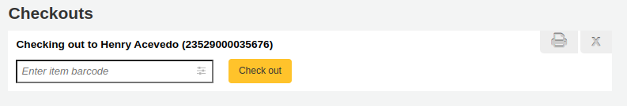
可勾選螢幕上方的列印鈕並選擇 ‘列印收條’ 或 ‘快速列印收條’。
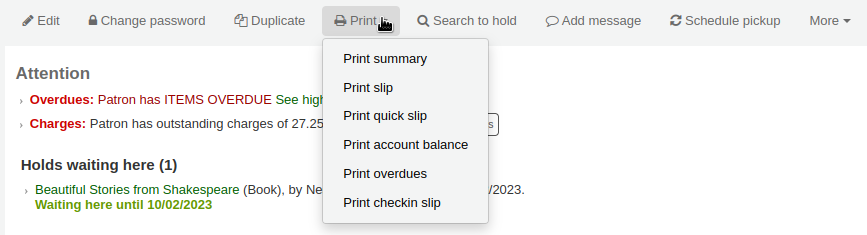
If you choose ‘Print slip’ it will print all of the items the patron has checked out, including those they checked out at an earlier date.
备注
The slip uses the ISSUESLIP notice. You can customize the notice in the Notices and slips tool.
Choosing ‘Print quick slip’ will print only the items that were checked out today.
备注
The quick slip uses the ISSUEQSLIP notice. You can customize the notice in the Notices and slips tool.
‘Print summary’ will generate a full page summary for the patron’s circulation information.
备注
The summary cannot be customized.
However, the tables for the checkouts, holds, and charges are customizable in the ‘Table settings’ section of the Administration module (table id: print-summary-checkouts, print-summary-holds, and print-summary-fines).
‘Print account balance’ will generate a summary of outstanding charges and unused credits in the patron’s account.
备注
The quick slip uses the ACCOUNTS_SUMMARY notice. You can customize the notice in the Notices and slips tool.
备注
This option will only appear if the patron has charges in their Accounting tab.
‘Print overdues’ will print out a slip that lists all items that are overdue.
备注
The overdue slip uses the OVERDUE_SLIP notice. You can customize the notice in the Notices and slips tool.
“列印借出清單”將印出一張清單，其中列出了今天借出的館藏。
备注
The checkin slip uses the CHECKINSLIP notice. You can customize the notice in the Notices and slips tool.
Exporting checkouts
Other than printing a receipt, there are several ways to export a patron’s checkouts.
表格頂部的“輸出”按鈕允許您以 Microsoft Excel 或 CSV 格式輸出讀者的當前借出，甚至可以複製或列印他們的借出。
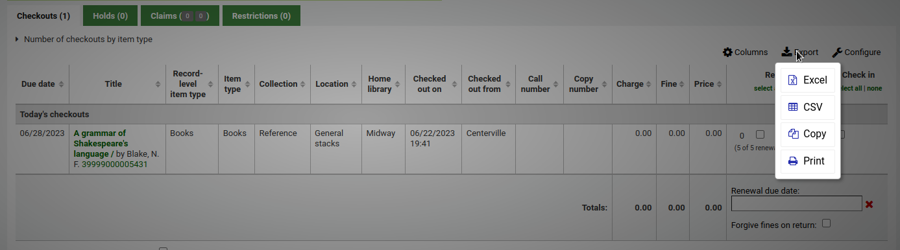
The CSV file exported this way will contain the columns of the table that are visible. You can click on the ‘Columns’ button and remove some columns first, if needed.
If the ExportCircHistory system preference is enabled, there will be an ‘Export’ column in the checkouts table. This is used to export the patron’s current checkouts in either MARC or CSV format.
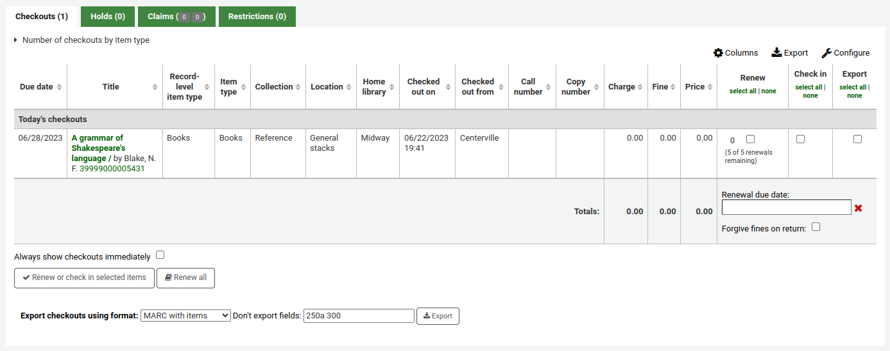
To export checkouts this way,
Select the checkouts to be exported using the checkboxes in the ‘Export’ column.
At the bottom of the table, choose the options for the export
Export checkouts using format
MARC with items: this will export the MARC records of the checked out titles, including the item information.
MARC without items: this will export the MARC records of the checked out titles.
CSV: this will export a CSV file of checked out titles. When this option is selected, a new dropdown menu will appear to choose a CSV profile.
Export bundle contents: if the patron checked out a bundle, this option will export the parent record as well as all the child records.
Don’t export fields: optionally, you can enter MARC fields that are not to be exported.
备注
The default values in the “Don’t export field” field are set in the ExportRemoveFields system preference.
清除讀者資訊
When you’re done checking an item out if you have the DisplayClearScreenButton preference set to ‘Show’ you can clear the current patron by clicking the X in the top right of the patron’s info to remove the current patron from the screen and start over.
If you have the CircAutoPrintQuickSlip preference set to ‘clear the screen’ then you simply need to hit enter or scan a blank barcode and the screen will be cleared of the current patron.
批次借出
If you would like to perform a batch check out you can do so by turning on the BatchCheckouts system preference and assigning the proper patron categories via the BatchCheckoutsValidCategories system preference. This will allow you to use an RFID pad that reads multiple barcodes or perform a batch check out for training internal use.
您可以從該螢幕掃描多個條碼或加下載條碼檔案。
If you have the SpecifyDueDate system preference enabled you will have the option to set a due date for the checkouts.
如果無法借出館藏，將在螢幕上給予警告，並可選擇取消選中不應借出的館藏。

使用統計讀者類型則可看到被掃瞄館藏的館內使用情形。
借出訊息
被借出的套書若已著錄於館藏紀錄 (於 MARC21 時) 的分欄 3 將彈出訊息告知還有其他部份可借出。

有時，Koha 將禁止館藏借出館藏給讀者。發生此事時，會出現警示訊息提示原因。
讀者待付罰款過多

You can set the amount at which patron checkouts are blocked with the noissuescharge system preference
此讀者帳號被停權

This can be set by the librarian editing a patron record and adding a restriction or by the Overdue/Notice Status Triggers
取得授權的館員可以暫時取消限制

讀者需確認其地址
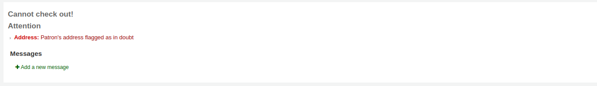
This can be set by the staff editing a patron record and adding a flag.
遺失讀者證的讀者
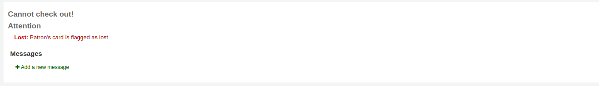
This can be set by the staff editing a patron record and adding a flag.
借出警示
有時借出會啟動警示訊息以黃色顯示在借出欄位之下。館員需確認看到這些警示才能繼續借出館藏。
讀者有待繳罰款

被別人預約的館藏
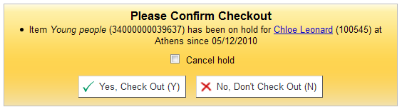
館藏應在預約書架等待提取

館藏已經借出給該讀者

館藏已借出給其他讀者

此警示允許為企圖借出的讀者預約該館藏。
不外借館藏
Patron has too many things checked out and AllowTooManyOverride is set to ‘Allow’

Patron has too many things checked out and AllowTooManyOverride is set to “Don’t allow”

不能續借的館藏

This can be overridden with the AllowRenewalLimitOverride system preference
找不到條碼號

詳情見本手冊的 快速編目 章節。
借出的館藏已被標記為 ‘遺失’
Depending on the value in your IssueLostItem preference, you may just see a warning

或確認盒

不建議此年齡層的讀者借出此館藏

借出的館藏符合 :ref:`decreaseLoanHighHolds <decreaseloanhighholds-preferences-label>`系統偏好的範疇

館藏有隨附資料（欄位 952$3，’指定資料’，已填寫）

If CircConfirmItemParts is set to ‘Require’, the staff member will have to confirm the checkout

If the CheckPrevCheckout system preference says to check the patron’s circulation history, a warning will show to indicate that the patron has already checked out the item
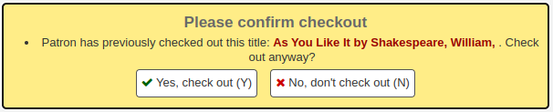
Checkout notes
Checkout notes are notes that patrons can add from the OPAC about a particular item they have checked out (for example: missing first page, or DVD is scratched, etc.).
To enable checkout notes, set the AllowCheckoutNotes system preference to ‘Allow’.
Once the system preference is activated, a new column titled ‘Report a problem’ will appear in the list of checkouts in the patron’s summary in the OPAC.

When the patron clicks on ‘Add note’, they will be able to write a note about this checkout.

Staff will be alerted of new checkout notes in the section at the bottom of the staff interface’s home page, with other pending requests.

An email will also be sent to the email address in KohaAdminEmailAddress to alert the system administrator that a checkout note was added.
备注
You can customize this message in the Notices and slips tool. The letter code is CHECKOUT_NOTE.
Checkout notes can be managed from the circulation module home page, under Circulation > Checkout notes, or by clicking on the message in the pending requests section of the staff interface home page.
From this page, staff can mark notes as seen, either individually by clicking the ‘Mark seen’ button on the right, or in a batch by selecting the notes and clicking ‘Mark seen’ at the top of the page. Marking the notes as seen will remove them from the pending requests section of the staff interface homepage.
Seen notes can be filtered out with the ‘Hide seen’ link at the top of the table.
Checkout notes will also appear upon checkin.
Once the item is checked in, the note will be removed permanently from this page.
續借
借出的館藏可以依照 流通規則 與 續借偏好 續借 (再被同個人借閱一個週期) 它。
若 允許續借，讀者可以經由 OPAC 續借它，但有時仍需要從館員介面續借。
可從以下兩件事，續借給讀者。
首先進入讀者詳情頁面或借出頁面並檢視下方的借出摘要。

在續借欄看到館藏被續借的次數以及可續借的勾選盒。按館藏旁的勾選盒就可續借該館藏，並按 ‘續借或還入勾選館藏’ 鈕，或按 ‘全部續借’ 鈕續借全部館藏。
Sometimes renewals will be blocked based on your circulation rules, to override this block you must have your AllowRenewalLimitOverride preference set to ‘Allow’. If you allow renewal limit overrides, you will see a checkbox at the bottom left of the circulation summary. Check that box and then choose the items you would like to renew.
按此盒將在續借欄新增勾選盒供續借館藏之用。
You can also mark a renewal as ‘unseen’, to differentiate between renewals where staff has actually seen the item, versus renewals where they didn’t see it (over the phone, for example). To do this, you must first enable the UnseenRenewals system preference. Once enabled, a checkbox will appear at the bottom left of the circulation summary. Check that box to mark the renewals as ‘unseen’. Then click either ‘Renew or check in selected items’ or ‘Renew all’.

第二個方法是進入流通選單下的 ‘續借’ 頁面。
然後掃瞄館藏條碼就能續借該館藏。

續借館藏後讀者將收到確認訊息。

若找不到條碼將出現錯誤訊息。

實際上未借出館藏亦發出錯誤訊息予讀者。

還入 (送回)
可從多個不同的地方還入館藏
館員介面上方的還入盒
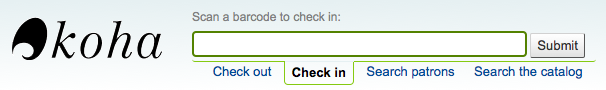
在流通頁面快速搜尋區的還入選項
讀者借出摘要(以及借出摘要頁面)的還入連結

流通選單下的還入頁面

Koha 還提供自動還入功能，可以在 item types 中設置。
還入館藏
將館藏的條碼掃瞄入盒，就能檢查其借出狀態。借出館藏的摘要將顯示在借出盒之下
說明
您可以在管理模組的 :ref:`’欄組態’<column-settings-label>`部份, 自定義此表的列(table id: checkedintable)。
處理還入箱的館藏時先勾選 ‘還入箱模式’ 再掃瞄館藏。才能把還入日期設為上個開館日。
這要求您將閉館日加到:ref:行事曆工具<calendar-label>
掃瞄館藏前，先點選 ‘豁免收費’ 盒，就能豁免所有還入館藏的費用。
If you have the SpecifyReturnDate preference set to ‘Allow’ you will be able to arbitrarily set the return date from below the check in box.
還入訊息
還入館藏時出現若干訊息：
If the return policy dictates items need to be returned back to their home or holding library, a message will appear asking staff to transfer the item.
备注
When set to ‘Block’, the TransfersBlockCirc system preference will block all actions until the pop-up is confirmed.
When set to “Don’t block”, the AutomaticConfirmTransfer system preference determines what happens if the pop-up is dismissed without confirming the transfer.
After this item is checked in and the transfer is confirmed, the status of the item will be changed in the catalog to ‘in transit’.
To mark an item as back at the home or holding library, check the item in at that library.
A message will appear to tell you that the item is not checked out, but the status will now say available in the catalog. This step is necessary to mark items as received by the library.
勾選的館藏是成套時，顯示提示訊息表示還有其他部份可借出
If CircConfirmItemParts is set to ‘Require’, the staff member will have to confirm the checkin

還入已被預約的館藏時，將出現確認該預約的訊息

勾選確認預約鈕，將標記該館藏為預約到館待提取

勾選 ‘列印收條與確認’ 鈕，將標記館藏為預約到館待提取，並將圖書與讀者資訊列印，供館員夾在圖書中
忽略預約將保留館藏在預約狀態，但保留其狀態為可借出(不能取消預約)
還入的館藏已被其他分館預約，將出現確認訊息，要求轉移他們
勾選確認預約與轉移鈕，將標記館藏轉移至預約指定的圖書館

點擊“列印清單、轉移和確認”按鈕會將館藏標記為正在運送到預約的圖書館，並向圖書館出示收據以列印並在圖書上附上讀者資訊
忽略預約將保留館藏在預約狀態，但保留其狀態為可借出(不能取消預約)
If you have the system showing you fines at the time of checkin (FineNotifyAtCheckin) you will see a message telling you about the fine and providing you a link to the payment page for that patron

Claiming an item as returned
If the patron claims they returned something, you can mark that item as ‘Claimed returned’ and track those claims.
In order to use this feature,
Add a new authorized value to the LOST category to represent items claimed as returned.
Enter the authorized value in the ClaimReturnedLostValue system preference (this enables the return claims feature).
Choose if a lost fee should be charged to the patron who claims an item as returned. Set a value in the ClaimReturnedChargeFee system preference (the default is to ask if a lost fee should be charged).
Optionally set a number of return claims a patron can make before a warning appears in their record in the ClaimReturnedWarningThreshold system preference.
Once the feature is enabled, a button to ‘Claim returned’ will appear in the patron’s checkouts tab.
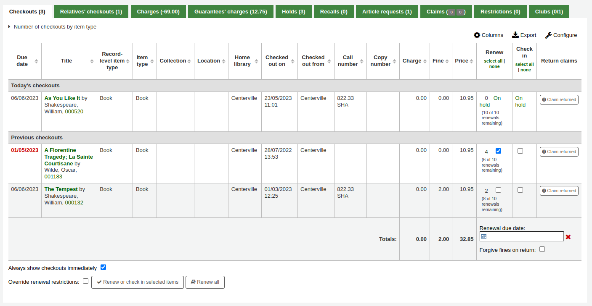
To claim an item as returned,
Click the ‘Claim returned’ button next to the checkout.
In the pop-up, enter any notes about this claim.
If the ClaimReturnedChargeFee system preference is set to ask whether or not the lost fee should be charged to the patron, there will be a checkbox to charge the fee.
Click ‘Make claim’.
The claimed returned item will stay in the patron’s checkouts, and its lost status will be updated. The claim will also appear in the ‘Claims’ tab.
Resolving a return claim
To resolve a claim,
Go to the patron’s record in the ‘Claims’ tab.

Click ‘Actions’ next to the item and choose ‘Resolve’.
In the pop-up, choose a resolution and new lost status.
Resolution: the resolution is the reason this claim is being closed.
备注
The values are managed in the RETURN_CLAIM_RESOLUTION authorized value category.
New item lost value: this is the new lost status for this item.
备注
The values are managed in the LOST authorized value category.
Click ‘Resolve claim’.
The resolved claim will stay in the patron’s record, unless they are purged by the cleanup_database.pl cron job after the number of days specified in the CleanUpDatabaseReturnClaims system preference.
Circulating bundles
This feature adds the ability to create bundles of items that can be checked out as a single entity. A bundle could for example be a box of related items from your library or a collection of musical scores which need to be circulated together.
You create a collection level bibliographic record and add items to it in the usual way. Those items can then be converted to a bundle by adding existing item records to them using their barcodes. The items will remain attached to their original records and be marked as ‘not for loan’.
Configuration
First you need to make some configuration choices.
Item types - you may want to create a separate item type to identify your bundles.
Circulation rules - you can optionally create circulation rules for your bundle item type.
There are two system preferences which control the status values used with bundles:
Creating bundles
The bundle functionality will only be displayed if you create a catalogue record with the Leader, (000 MARC tag) position 7 set to ‘c’ for Collection.
备注
It might be useful to have a separate MARC bibliographic framework for bundles with the ‘c’ set as a default value if you will use bundles regularly. You can also add any custom fields to the template that might be unique to bundles such as size or weight.
Your catalogue record will contain information to identify the content of the bundle.
For example, if the bundle is a box of resources for school children on the topic of oceans, the catalogue record might look something like the one shown below.
Add an item record for each physical bundle. It is likely that you will want a specific item type for bundles so that you can identify them easily and create circulation rules for them. In this case the bundle has the item type COLLECTION.
An item record attached to this type of catalogue record can be converted into a bundle via the Manage bundle button on the far right-hand side of the holdings table for each item as shown below.
Adding items to bundles
Click on Manage bundle and then the Add to bundle button to add items to the bundle using the barcode of the item.
You will see a message telling you that the item has been added successfully.
When you have finished scanning in items you can click on Close and view the bundle contents. The bundle contents list can be exported or printed if required.

警告
Items added to bundles are still attached to their permanent catalogue record, however, they cannot be checked out individually. When added to a bundle an item’s Not for Loan status is updated and can be viewed in the holdings table of the permanent record along with a link to the bundle. The Not for Loan status can be defined in the BundleNotLoanValue system preference.
If an item is already found to be attached to the bundle, a warning message will be displayed.
If an item has an item-level hold, a warning message will be displayed. To add the item to the bundle anyway, click ‘Ignore holds and add to bundle’. To cancel, click ‘Close’.
If an item cannot be added to the bundle for any other reason a failure message will display.
Removing items from bundles
To remove an individual item from a bundle you can click on the Remove button from the Actions column of the bundle contents list.
To remove multiple items from the bundle you have two options:
Use the ‘Remove from bundle’ button from within the Manage bundle display
Scan in barcodes in the same way as you add items to bundles. You will see a confirmation dialogue to let you know the item has been removed.
If the item couldn’t be removed you will see a Failure message.
The second way to remove multiple items is to scan the barcode of the item into the checkin box and you will be given the option to remove the item from its bundle.

When you have finished working with a bundle you can close the contents list by clicking on the Manage bundle button again.
Circulating bundles
Checkout
You can checkout a bundle in the usual way from Circulation using the barcode of the bundle. If required you can create specific circulation rules for bundles based on their item type.
Remember, once an item is within a bundle it cannot be checked out individually. If you try to do this the following alert will be displayed.
You can see the checkout from the patron’s list of checkouts.

You can also see that the bundle is checked out from the status column of the Holdings table of the catalogue record.from the catalogue record display.
Checkin
Check in bundles in the usual way from Circulation. You will then be prompted to verify the presence of each item that belongs in the bundle.
If you need to skip the verification process, click the ‘Confirm checkin without verifying bundle contents’ button. You will be able to verify the contents later.
A list of the items currently attached to the bundle, and expected to be returned, will display at the top of the dialogue. Beneath the list will be a ‘Barcodes’ box where you are expected to scan the barcodes of the returned items one by one.
As you scan items, the matching row in the list will be highlighted to give some visual feedback. You also see a running total of items that have been checked in on the right hand side.
When you have finished scanning the returned items you can click on ‘Confirm checkin and mark missing items as lost’ or you can cancel the checkin.
If all the bundle items were marked as found you will be presented with a message to say the checkin is complete.

You can view and print a contents list.
Missing items
If some items were found to be missing during the verification stage the check in will proceed but you will be alerted to the fact that the bundle content has changed and you will be given the option to view and print an updated contents list.
You can also view a list of the missing items.
Any items that were missing during the verification stage will automatically be marked with an appropriate Lost status and a return claim added to track which checkout lost the contained item. You can add your own Lost statuses as authorized values and can control which lost status is used via the BundleLostValue system preference. For example a ‘Missing from bundle’ status as shown below.
In the Manage bundle contents view, the missing item displays with the date last seen.
Claims returned process
Within the patron record the missing items are listed as claims returned and can be viewed from the Claim(s) tab in the Checkouts table.
Click on the numbered square to view the missing items for the patron.
If an item is found it should be checked in. The checkin dialogue box will include a button to ‘Resolve’ the claim.
You are required to add a resolution reason and can optionally change the lost value of the item.
Inventory (checking bundle contents at any time)
A verification can be triggered at any time by checking the bundle in. If the system detects that the bundle was not checked out at this point, a modified confirmation dialogue is displayed which will include all items expected to be present in the bundle, even those currently marked as lost.
This allows for a quick view of what should be in the bundle and what’s currently marked as missing. You can optionally cancel the checkin or choose to rescan the items to perform the verification, marking items as found or subsequently missing. As this is a checkin that is not associated with a checkout, if new items are found to be missing, we will mark them as lost but cannot associate them with a checkout and returns claim.
預約
Koha allows patrons to put things on hold. A ‘Hold’ is a way to reserve an item. Depending on your circulation and fines rules and hold system preference settings, patrons will be able to place items on hold for pickup at the library at a later date and time.
Placing holds in the staff interface
There are several ways to place holds from the staff interface. The most obvious is using the ‘Place hold’ button at the top of any bibliographic record.
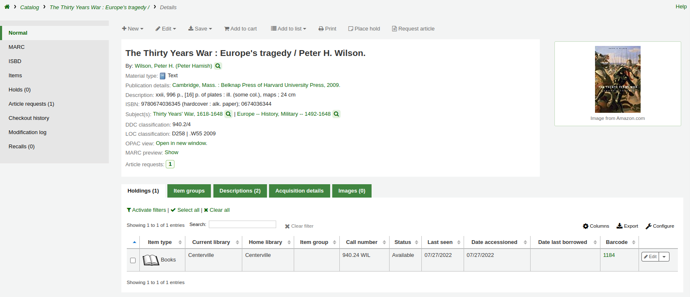
可點選目錄搜尋結上方較小字的 ‘預約’ 連結，或每個結果旁的 ‘預約’ 連結。
To place holds on multiple titles at the same time, check the boxes next to the titles in the search results, and click the ‘Place hold’ button at the top of the search results.
以讀者的條碼或名稱的任何部份搜尋讀者，進入預約程序。
If you’d like to search for the patron first and then the bibliographic record for the hold, you can open the patron record and click on the ‘Search to Hold’ button at the top of the patron record.
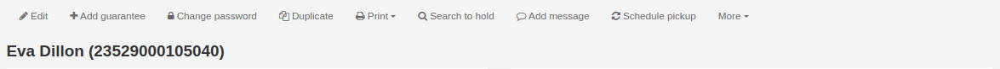
After clicking the button you will be brought to the catalog search page where you can find the title or titles you need to place a hold on. Under each title on the results you’ll see an option to ‘Place hold for (patron name).’
If you want to place a hold on multiple titles for this patron, check the boxes to the left of the titles, click the arrow to the right of the ‘Place Hold’ button and choose ‘Place hold for (patron name)’.
备注
Once the holds are placed, you can choose to have Koha ‘forget’ the patron’s name by clicking the arrow to the right of the ‘Place hold’ button on the search results and choosing the ‘Forget (patron name)’ option.
依照同時選定的預約館藏數，您可以看見不同的預約表單。若在一個書目紀錄內預約，可看到所有預約的館藏。
Patron: the patron’s name for whom this hold is
Estimated priority: this takes into account holds that are already placed on this title
Note: enter any notes that might apply to this hold
Pickup at: choose the library where the patron will pick up the item
Request specific item type: if the AllowHoldItemTypeSelection system preference is set to ‘Allow’ there will be an option to choose to limit the hold to a specific item type
Hold starts on date: if the AllowHoldDateInFuture system preference is set to ‘Allow’, and the patron wants the hold to start on a date other than today, enter the date here
Hold expires on: if the patron has specified that they don’t want the item after a certain date, or if you have limits on hold lengths, you can enter an expiration date for the hold in the ‘Hold expires on date’
备注
To cancel expired holds automatically you need to have the expired holds cron job set to run on a regular basis.
Hold next available item: check if the hold should be on the next available item, if not, choose an item group in the ‘Hold next available item from an item group’ section or a specific item in the ‘Place hold on a specific item’ section below
Holds to place (count): If ‘Hold next available item’ is checked and multiple holds per record are allowed, you can enter a number in the ‘Holds to place (count)’ text box to place that number of holds for the selected patron.
备注
The ‘Holds to place (count)’ text box will only appear if the Circulation and Fines rules are set to allow a ‘Holds per record’ limit that is greater than 1, but not Unlimited, for this combination of item type and patron category.
Non-priority hold: if you are placing a hold for internal purposes, such as checking for missing pages or needing to add a label, check the ‘Non-priority hold’ box. This type of hold will not prevent the patron who currently has the item to renew their checkout.
Hold next available item from an item group: if the EnableItemGroupHolds system preference is set to ‘Enable’ and the record has item groups, you can choose to place a hold on the next available item of a group, rather than the next available item on the whole record or a specific item.
Place hold on a specific item: if the hold should be on a specific item rather than the next available item of the record or the group, select the item that should be placed on hold
备注
The default pickup library for item-level holds is determined by the DefaultHoldPickupLocation system preference.
If you’re placing holds on multiple records you will be presented with the next available option for all titles. If no items are available for hold it will say so on the confirmation screen.

If your library uses the patron clubs feature, use the clubs tab to place a hold for a club.
To place a hold for a club, click the clubs tab, search for and select the club name, and click the ‘Place hold’ button.
管理預約
從書目紀錄左方的預約鈕，可改變或取消預約。
From the list of holds you can change the order of the holds, the pickup location, suspend, or cancel the hold.
备注
If the HoldsSplitQueue system preference is set, you will see the holds list split across different tables by either pickup library, item type or both.
备注
If the AllowHoldDateInFuture system preference is set to “Don’t allow”, you will not have the option to edit the date the hold was placed (the column labelled Date).
备注
Depending on how the HidePatronName system preference is set, the list may show card numbers instead of names in the patron column like in the image above.
Changing the order of the holds
To rearrange holds, make a selection from the ‘Priority’ drop-down or click the arrows to the right of the priority pull down.
警告
Clicking the double down arrow to the right of the hold will stick the hold at the bottom of the list even if more requests are made.
For example, if your library has home-bound patrons that are allowed to keep items out for months at a time, it would not be fair to other patrons if a home-bound patron were able to check out a brand new book and keep it for months. For this reason, the home-bound patron’s hold request would stay at the bottom of the queue until everyone else who wanted to read that book has already done so.
In the list of existing holds, lowest priority holds are indicated by the double down arrow with a line underneath.
Clicking the double arrow again will put the hold back in regular priority, in last place.
Suspending holds
If a patron asks to have their hold suspended and the SuspendHoldsIntranet system preference is set to ‘Allow’, you can do so by clicking the ‘Suspend’ button at the far right.
If the patron gives you a date for the holds to resume, you can enter that in the date box and click the ‘Update hold(s)’ button to save your changes.
备注
If the AutoResumeSuspendedHolds system preference is set to “Don’t allow” there will not be the option to put an end date on the hold suspension.
备注
The auto_unsuspend_holds.pl cron job is required to automatically resume suspended holds.
You can also unsuspend holds manually by clicking the ‘Unsusped’ button.
If the SuspendHoldsOpac system preference is set to ‘Allow’, patrons will be able to suspend and unsuspend their own holds from their online account.
Deleting holds
To delete or cancel a hold, click the red trash can to the right of the hold line.
To delete/cancel a bunch of holds you can choose ‘del’ from the drop-down menu on the left of each line and then click ‘Update hold(s)’ at the bottom of the list.
Alternatively, you can select the holds to be cancelled and click the ‘Cancel selected’ button.
收到預約
當被預約的館藏 還入 或 借出 系統會提醒向流通館員告知該館藏被預約，並為他們提供管理預約的選項。
還入被預約的館藏時，系統會要求館員確認該預約或轉移館藏
或僅確認預約
如果需要轉移館藏，點擊“確認並轉移”或“列印清單、轉移和確認”會將標記的館藏轉移到適當的圖書館。
如果館藏已經在預約取書的圖書館，點擊“確認”或“列印清單並確認”按鈕會將館藏標記為可供讀者取書。
點擊“忽略”將保留預約，但允許將館藏借給另一位讀者或更改館藏的狀態（例如，如果館藏被損壞退回）。
“列印清單並確認”或“列印清單、轉移並確認”選項將打開一個可列印頁面，您可以將其附加到包含必要的預約或轉移資訊的館藏上。
备注
The slip that is printed is the HOLD_SLIP notice. It can be modified with the Notices and slips tool.
When the hold is confirmed, if the patron is notified, the ‘hold filled’ notice will be sent to them.
备注
The notice that is sent is the HOLD notice. It can be modified with the Notices and slips tool.
备注
If the HoldsAutoFill system preference is enabled, the circulation staff will not have to confirm the hold, but they will have the option to print the hold or transfer slip.
If the HoldsAutoFillPrintSlip system preference is enabled, the print window to print the hold or transfer slip will open automatically.
一旦確認後，預約將在讀者記錄和借出螢幕上的 :ref:`’預約’選項<holds-summary-label>`下顯示為“等待”。

此館藏紀錄將顯示該館藏已被預約。
在某些情況下，讀者可能會代表其他人進來取書。在這種情況下，請確保在您將館藏借給其他人時取消預約。或者，對於已經在等待其他人的館藏，可能會錯誤地嘗試借出。在這種情況下，您將看到一條警告訊息。

取消預約：與“是的，借出”結合使用，此選項將取消當前預約並將館藏借出給新讀者。
恢復等待狀態：與“是，借出”結合使用，此選項將恢復預約狀態（放置預約的讀者將回到列中的第一位）並將館藏借出給讀者。
是的，借出：此選項會將館藏借出給當前讀者。
不要借出並列印清單：此選項將打開列印窗口以列印預約單，借出將被取消，預約將被保留。
不，不借出：此選項將取消借出，預約將保留。
如果您嘗試 還入 一個已經在等待被取走的館藏，一個彈出窗口表示找到了預約且該館藏已經在等待出現。

確認預約：此選項將保留現有的預約。
列印清單並確認：此選項將打開列印窗口以列印預約單並保留現有預約單。
取消預約：此選項將取消預約。
如果您取消預約並且該館藏存在進一步預約，您將看到一個新選項以確認下一位讀者的預約。
Curbside pickups
Koha has an integrated curbside pickup module that can be used to schedule hold pickups by patrons.
Get there: Circulation > Curbside pickups
See the curbside pickup configuration section to learn how to set up curbside pickup.
备注
Staff needs the manage_curbside_pickups permission (under circulate) in order to schedule and manage pickups.
Scheduling a pickup
Get there: Circulation > Curbside pickups > Schedule pickup
To schedule a pickup,
Click the ‘Schedule pickup’ tab
Search for the patron for whom to schedule a pickup, with either their name or their card number
警告
If ‘Enable for waiting holds only’ is set in the curbside pickup configuration for your library, and the patron has no waiting holds, there will be an error message.
Enter a date for the pickup
备注
Only dates with available time slots will be displayed.
The possible pickup times will be displayed, depending on the day of the week
备注
The number in parentheses under each time slot is the number of patrons who are currently scheduled for a pickup at that time. If the maximum number of appointments has been reached, based on the ‘Maximum patrons per interval’ setting in the curbside pickup configuration, the time slot will be displayed in red and you will not be able to select it.
If needed, you can add a note concerning this pickup
勾選 ‘送出’
Alternatively, you can schedule a pickup from the patron’s account.
Click ‘Schedule pickup’ at the top of the patron’s detail page
备注
If the patron has chosen to receive the ‘Hold filled’ notice by email, they will also get a notification when a curbside pickup is scheduled.
You can customize the notice by editing the NEW_CURBSIDE_PICKUP template in the Notices and slips tool.
Preparing for curbside pickups
Get there: Circulation > Curbside pickups > To be staged
The ‘To be staged’ tab contains all the curbside pickups still waiting to be prepared.
备注
If the patron has overdues or restrictions, it will be shown here, under their name.
Once the items are prepared and ready to be picked up, click ‘Mark as staged & ready’. This will transfer the scheduled pickup appointment in the ‘Staged & ready’ tab.
备注
There is no need to checkout the item or items to the patron at this point. When delivering curbside pickups, the module will automatically check the items out.
You have the option to refresh the list manually by clicking the ‘Refresh’ button. You can also set up your session to refresh every X seconds. Check the box next to ‘Refresh automatically every X seconds’ and enter the number of seconds.
Delivering curbside pickups
Get there: Circulation > Curbside pickups > Patron is outside
From the OPAC, the patron can alert that they are outside. Staff can also indicate that the patron has arrived by clicking on the ‘Patron has arrived’ button from the ‘Staged & ready’ tab.
At the designated time, meet the patron to give them their items. Then, click ‘Mark as delivered’. This will check out the item or items to the patron and transfer the curbside pickup appointment to the ‘Delivered today’ tab.
Cancelling curbside pickups
Get there: Circulation > Curbside pickups > To be staged
If, for any reason, you need to cancel a curbside pickup appointment, click the ‘Cancel’ button from the ‘To be staged’ tab.
If the appointment has already progressed beyond the ‘To be staged’ status, click ‘Mark as To be staged’ to bring it back there in order to cancel it.
催還
催還功能允許使用者催還當前借出的館藏。一旦確認催還，當前借出館藏的借書者將收到通知，告知他們的到期日已調整，他們需要歸還館藏。一旦催還的館藏被退回，催還請求者將收到通知，他們的館藏正在他們指定的取書地點等待取件。
請參閱 :ref:`請求催還<request-recalls-opac-label>`部分，了解如何在 OPAC 中進行催還。
在 Koha 中設定催還
使用此功能：
Enable the UseRecalls system preference
Set the RecallsMaxPickUpDelay system preference
Optionally, enable the RecallsLog system preference
修改相關的以下部分 流通規則
允許催還（計數）
每筆催還記錄（次數）
允許催還架上館藏
催還到期日間隔（天）
催還逾期罰款金額
催還提取期間
確保所有負責管理催還的館員都擁有特級圖書管理員或 manage_recalls 權限
安排 催還工作排程
查看 :ref:`催還通知和清單<existing-notices-and-slips-label>`以確保它們具有所需的所有資訊
管理催還
催還的特點是相對自動化。館員無需進行大量操作即可管理催還。
催還狀態
催還的可能狀態如下：
要求
已提出新的催還要求，該館藏必須由當前擁有該館藏的讀者歸還
要求催還出現在
the recalls queue
the recalls to pull list, if an available item can fulfill the recall
書目記錄的“催還”選項
the ‘Recalls’ tab of the patron’s file (and its equivalent in the OPAC)
the ‘Recalls history’ tab of a patron’s file (and its equivalent in the OPAC)
等待
催還的館藏正在請求者選擇的分館等待取得
等待催還出現在
轉移中
一件館藏已指定為催還並正在運送到請求者選擇的取件分館
在途催還出現在
逾期
被催還的逾期館藏由目前擁有它的讀者歸還
逾期催還出現
已填入
已將催還的館藏借出給催還請求者，催還已完成
已完成的催還出現
失效的
The recall was not completed before a defined expiration date or the recall requester failed to pick up their waiting recall within the pickup period defined in RecallsMaxPickUpDelay
失效的催還出現在
已取消
催還請求被取消。
取消的催還出現在
收到催還館藏
在 還入 一件被催還的館藏時，將出現一個彈出窗口，要求工作人員確認或忽略催還。
確認催還：此選項會將催還設定“等待”狀態，如果讀者在其檔案中有電子郵件地址，將通知他們他們催還的館藏現在已準備好取書。
备注
發送的通知是 PICKUP_RECALLLED_ITEM。您可以在 :ref:`notices and slips tool<notices-and-slips-label>`修改內容
列印清單並確認：除了“確認催還”（更改狀態並發送通知）之外，此選項將列印一張您可以附加到館藏的清單（類似於保留單）。
备注
清單是 RECALL_REQUESTER_DET。您可以在 :ref:`訊息及清單工具<notices-and-slips-label>`修改內容
忽略：此選項將還入館藏，但催還不會設定等待取件，也不會通知顧客。
如果讀者要求在不同的圖書館取回他們催還的館藏， 移轉 將被觸發。
確認催還和轉移：此選項會將催還設置“轉移中”。
列印清單、轉移和確認：除了將催還設定為“轉移中”之外，此選項還將列印一張您可以附加到館藏的清單（類似於保留單）。
忽略：此選項將還入館藏，但催還不會設置為“轉移中”
备注
使用上述任何選項，都不會通知顧客他們的催還已準備就緒。
取消催還
备注
只能取消請求或逾期的催還。
無法取消當前正在等待取件的催還
館員可以在館員介面的螢幕上取消催還。
通過點擊“操作”按鈕並選擇“取消”選項，從 催還順序 中單獨取消。
或者選擇多個催還並點擊螢幕底部的“取消選定的催還”按鈕。
如果被催還的館藏正在轉移中，取消選項也會觸發轉移回館藏的主圖書館。
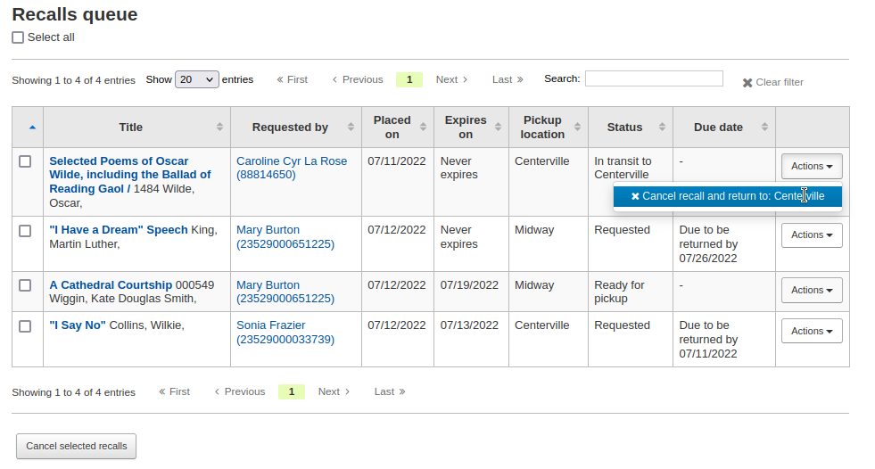
取消從 催還召回，藉由點擊右側的“取消催還”按鈕
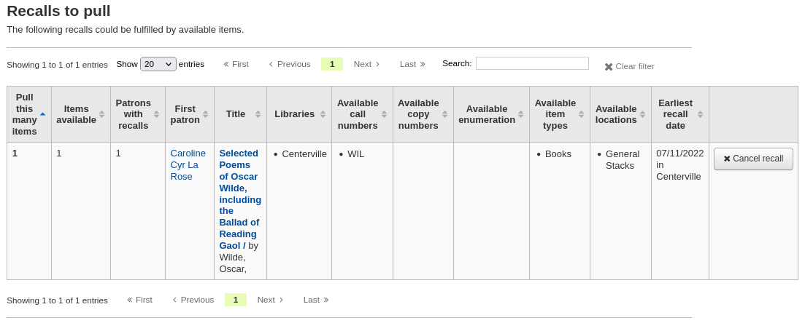
如果被催還的館藏正在轉移中，取消選項也會觸發轉移回館藏的主圖書館。

通過點擊“操作”按鈕並選擇“取消”選項，從 ˊ逾期催還清單 中單獨取消。
或者選擇多個催還並點擊螢幕底部的“取消選定的催還”按鈕。
透過點擊“操作”按鈕並選擇“取消”選項，從書目記錄的“催還”選項中取消。
或者選擇多個催還並點擊螢幕底部的“取消選定的催還”按鈕。
通過點擊“操作”按鈕並選擇“取消”選項，從讀者詳細資訊頁面的“催還”選項中取消。
通過點擊“操作”按鈕並選擇“取消”選項，從讀者檔案的“催還歷史”選項中取消。
更改等待催還的狀態
如果催還正在等待取件，並由於某種原因館員需要更改此狀態（例如，提出請求的讀者打電話但他們沒辦法取件），則可以恢復等待狀態。
將催還標記為逾期
如果催還未在新的截止日期前登記，則應將其標記為逾期由 overdue_recalls cronjob。但是，可以手動將催還標記為逾期。
從 催還順序，點擊“行動”按鈕並選擇“標記為逾期”選項。
逾期催還出現在 逾期催還請單。
即將失效的催還
If a recall as been awaiting pickup for longer than the allowed period defined in RecallsMaxPickUpDelay, it should be expired automatically by the expire_recalls cronjob. However, it is possible to expire recalls manually.
從 催還等待取件清單，點擊右側的“失效催還”按鈕。
催還報告
一旦 設立催還，新的部分將出現在流通模組中。
Get there: Circulation > Recalls
Recalls queue
The recalls queue shows all the current active recalls with their statuses.
From the recalls queue, staff can cancel active recalls either individually by clicking the ‘Actions’ button and selecting the ‘Cancel’ option.
或者選擇多個催還並點擊螢幕底部的“取消選定的催還”按鈕。
For recalls that are in transit, it is possible to cancel them and this will trigger a transfer back to their home library.
For recalls that are currently awaiting pickup, it is possible to revert the waiting status by clicking the ‘Actions’ button and selecting the ‘Revert waiting’ option.
For recalls that are overdue, it is possible to mark them as such from the recalls queue by clicking the ‘Actions’ button and selecting the ‘Mark as overdue’ option.
Recalls to pull
The recalls to pull list shows all the records that have been recalled but that have available items that could fulfill the request.
Staff can pick up these items from the shelves and check them in to fulfill the requests.
From the recalls to pull list, staff can cancel recalls if needed, by clicking the ‘Cancel recall’ button on the right.
If the item is currently in transit, cancelling the recall will also trigger a transfer back the the item’s home library.
Overdue recalls
This list shows the items that have been recalled but have not been returned by the new due date.
Recalls can be marked as overdue automatically through the overdue_recalls cronjob or manually.
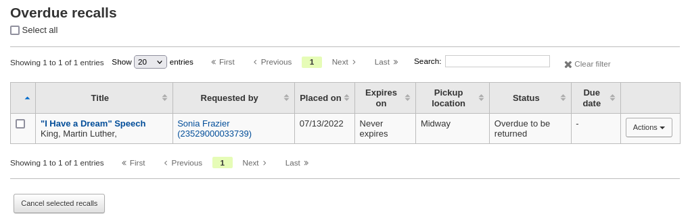
From this list, staff can cancel active recalls either individually by clicking the ‘Actions’ button and selecting the ‘Cancel’ option.
或者選擇多個催還並點擊螢幕底部的“取消選定的催還”按鈕。
Recalls awaiting pickup
The recalls awaiting pickup list shows all the recalls that are currently waiting for the patron to come and get them.
This list is divided in two tabs:
Recalls waiting: shows all the recalls currently awaiting pickup.
Recalls waiting over x days: shows the recalls that have been waiting for more than the number of days specified in the RecallsMaxPickUpDelay system preference.
From this list, staff can revert waiting recalls by clicking on the ‘Revert waiting status’ button on the right.
Staff can also manually expire recalls by clicking on the ‘Expire recall’ button on the far right.
Old recalls
The old recalls list shows all the inactive recalls (completed, cancelled and expired).
轉移
在多分館系統下，可以使用轉移工具，將館藏轉移至其他圖書館。
轉移館藏
按流通頁面的 ‘轉移’

鍵入想要轉移館藏去的圖書館
掃瞄或鍵入要轉移館藏的條碼
勾選 ‘送出’

該館藏應在轉移中

館藏到達轉移圖書館後，館員必須還入該館藏以確認不再是轉移中
館藏不會永久移置新館

該館藏顯示相同的 ‘所屬圖書館’ 但已更新其 ‘現在位置’ 顯示此刻的所在
設定圖書館
By default, you will enter the staff interface as if you are at your home library. This library will appear in the top right of the staff interface.
This is the library where all circulation transactions will take place. If you are at another library (or on a bookmobile) you will need to set the library before you start circulating items. To do this, click on your username and logged in library at the top right and choose ‘Set library’ or click ‘Set library’ on the main circulation page.
This will bring you to a page where you can choose at which library you are.
Once you save your changes, your new library will appear in the top right.
备注
Only staff with the loggedinlibrary (or superlibrarian) permission will be able to change the library where they are logged in.
Staff members who do not have this permission will only be able to log into their home library.
快速編目
需臨時新增一筆記錄供辦理借出業務使用。稱為 ‘快速新增’。首先應設定 fast_cataloging 權限。允許流通館員進入快速新增編目工具。經由快速新增有兩個方式新增題名。借出沒有書目紀錄的館藏時可從流通模組按 ‘快速編目’。
編目介面將打開簡略編目紀錄：

新增編目資料後，接著詢問鍵入館藏資料。鍵入館藏條碼、館藏代碼等資料後，就可儲存它，以備借出。
從借出畫面也可使用快速編目。鍵入條碼準備借出館藏時，若找不到該筆紀錄，Koha提示餔喣員使用快速編目新增該筆館藏，並借出它。
勾選 ‘快速編目’ 出現快速編目表單，讓您鍵入題名資訊

點選 ‘儲存’ 後，進入館藏紀錄，條碼號已經有了。

勾選 ‘新增館藏’ 鈕後，自動借出原先打算借出的館藏。

流通報表
在報表模組可找到大部份的報表，但常用的流通報表可從流通模組右方找到。
到那裡： 流通 > 流通報表
預約佇列
此報表將列出所有待處理的預約。
First, choose some filters for the report.
Then, the report will be displayed.
备注
You can customize the columns of this table in the ‘Table settings’ section of the Administration module (table id: holds-table).
To generate this report, you must either have the Build holds queue cron job running, or the RealTimeHoldsQueue system preference must be set to ‘Enable’. Either of these will run a script that decides which library should be responsible for fulfilling a given hold request. This should be enabled if your library system allows borrowers to place on-shelf holds.
The holds queue behavior is controlled by the system preferences StaticHoldsQueueWeight, RandomizeHoldsQueueWeight and UseTransportCostMatrix.
If you do not want all of your libraries to participate in the on-shelf holds fulfillment process, you should list the libraries that *do* participate in the process here by inputting all the participating library’s branchcodes, separated by commas (e.g. “MPL,CPL,SPL,BML” etc.).
By default, the holds queue will be generated such that the system will first attempt to hold fulfillment using items already at the pickup library if possible. If there are no items available at the pickup library to fill a hold, the system will then use the list of libraries defined in StaticHoldsQueueWeight. If RandomizeHoldsQueueWeight is disabled (which it is by default), the script will assign fulfillment requests in the order the libraries are placed in the StaticHoldsQueueWeight system preference.
For example, if your system has three libraries, of varying sizes (small, medium and large) and you want the burden of holds fulfillment to be on larger libraries before smaller libraries, you would want StaticHoldsQueueWeight to look something like “LRG,MED,SML”.
If you want the burden of holds fulfillment to be spread out equally throughout your library system, simply enable RandomizeHoldsQueueWeight. When this system preference is enabled, the order in which libraries will be requested to fulfill an on-shelf hold will be randomized each time the list is regenerated.
An alternative to static and randomized is using the Tansport cost matrix. It takes precedence in controlling where holds are filled from and allows you to define the ‘cost’ of transport between any two libraries. To use the Transport cost matrix simply set your UseTransportCostMatrix preference to ‘Use’.
預約到館待提取
This report will show you all of the items that have holds on them that are available at the library for pulling. If the items are available at multiple libraries then all libraries with that item available will see the hold to pull until one library triggers the hold.
备注
You can customize the columns of this table in the ‘Table settings’ section of the Administration module (table id: holds-to-pull).
Depending on the value of the CanMarkHoldsToPullAsLost system preference, clicking the “Mark item as lost” button or “Mark item as lost and notify patron” button will mark item as lost and notify the requesting patron.
You can choose which LOST value to set the item to with the UpdateItemWhenLostFromHoldList system preference.
警告
These buttons will only appear on item-level holds.
备注
The notification sent to the patron will use the CANCEL_HOLD_ON_LOST template. It can be customized in the Notices and slips tool.
You can limit the results you see by using the Refine box on the left side of the page.
备注
The default dates in the filters are determined by the HoldsToPullStartDate and ConfirmFutureHolds system preferences.
預約到館待提取
此報表將列出所有預約到館待提取的館藏。
备注
You can customize the columns of this table in the ‘Table settings’ section of the Administration module (table id: holdst).
You can cancel individual holds manually by clicking the ‘Cancel hold’ button to the right of each hold, or you can cancel selected holds using the button at the top of the list.
Items that have been on the hold shelf longer than you normally allow (based on the ReservesMaxPickUpDelay system preference value) will appear on the ‘Holds waiting over X days’ tab.
备注
You can customize the columns of this table in the ‘Table settings’ section of the Administration module (table id: holdso).
These holds will not automatically be canceled unless the ExpireReservesMaxPickUpDelay system preference is set to ‘Allow’ and the cancel_expired_holds.pl cron job is scheduled to run regularly.
You can cancel individual holds manually by clicking the ‘Cancel hold’ button to the right of each hold, or you can cancel selected holds using the button at the top of the list, or even cancel all holds.
The ‘Holds with cancellation requests’ tab contains waiting holds that have been canceled by patrons through their account on the OPAC, if that is allowed by the waiting hold cancellation policy.
From this tab, staff can cancel the holds, and transfer them back to their home library, if that is the case.
备注
Checking in the items will also cancel the holds with cancellation requests.
預約比率
預約比率有助於館藏發展。根據此報表可看出預約的讀者數以及該買的複本。此報表需要 3 本館藏才能滿足每個預約。此報告將告知應採購多少額外的館藏，以滿足此需求。
說明
You can customize the columns of this table in the ‘Table settings’ section of the Administration module (table id: holds-ratios).
轉移至收到
此報表將列出所有轉移至您圖書館的館藏。

若轉移程序有拖延，將顯示拖延的時間。

重要
An item is considered late based on the number of days you have entered in the TransfersMaxDaysWarning system preference.
請求論文
文章請求與預約請求有點像，但不是要求檢查項目的請求。相反，文章請求是針對連續發行的書的特定部分或文章的複印件的請求。這在大學圖書館很常見，研究人員可能會要求在期刊中找到一份文章的副本。
放置文章請求
First, enable your system preference for ArticleRequests.
設定「啟用」讀者使用文章請求.
接著決定讀者請求論文的方式，記錄、館藏、或兩者兼顧。
可以設定 3 個系統偏好做為請求論文的必備欄位。
ArticleRequestsMandatoryFields: make the following fields mandatory for records that are record level or item level requestable
ArticleRequestsMandatoryFieldsItemsOnly make the following fields mandatory for records that are only item level requestable
ArticleRequestsMandatoryFieldsRecordOnly make the following fields mandatory for records that are only record level requestable
The ArticleRequestsOpacHostRedirection system preference is used if you create analytical records. If enabled, it will redirect the patron from the child record to the host record in the OPAC.
The ArticleRequestsSupportedFormats system preference determines the various formats patrons can request their articles in (either photocopy or scan).
接著進入您的 流通與罰款規則模型 並選擇允許請求的規則.
您可以允許以紀錄層次、館藏層次、是的(兩者兼俱) 與無 (全部不要).
You can also limit the number of open article requests a patron can have at one time by patron category in the Default open article requests limit section of the circulation rules page.
You can set up a fee for each article request in the Default article request fees section of the circulation rules page.
放置請求論文
接者可以從館員介面或 OPAC 提出請求。
在館員客戶的細節紀錄頁面上，將在頂部看到’請求文章’鍵以及左手邊的’文章需求’鍵.兩個選項導引到同個頁面.
就像預約一樣，系統會提示您輸入讀者的卡號或名稱。
If there is a fee, a message will appear to inform the staff member.
填寫表格.
备注
The mandatory fields are set through the three system preferences ArticleRequestsMandatoryFields, ArticleRequestsMandatoryFieldsItemsOnly, and ArticleRequestsMandatoryFieldsRecordOnly.
Title: enter the title of the requested article or chapter
Author: enter the author of the requested article or chapter
Volume: enter the volume in which this article or chapter is found
Issue: enter the issue in which this article is found
Date: enter the date of the issue in which this article is found
Table of contents: check to indicate the patron wants a copy of the table of contents
Pages: enter the pages to photocopy or scan
Chapters: enter the chapters to photocopy or scan
Patron notes: enter any relevant notes
Format: choose the format in which the patron wishes to receive this article or chapter
备注
The possible formats are defined in the ArticleRequestsSupportedFormats system preference.
Pickup library: choose the library at which the patron wishes to pick up their photocopy
如果允許，請選擇要請求的特定項目。
然後，按下’放置請求’.
在OPAC中，讀者可以從結果清單中自行提出請求

或轉到詳細記錄
與預約一樣，如果讀者未登入，則將要求他們登入.
該表格與館員頁面中的表格相同.
If there is a fee, a message will appear to inform the patron.
If allowed, the patron can choose the specific item to request.
From their account, the patron will be able to follow the progress of their request from ‘new’
to ‘pending’, if necessary,

進行’處理’.
The patron will receive an email notification after placing the request to confirm it as well as when the status of the request changes.
备注
When placing an article request, the patron will receive a notification. The notice sent is based on the AR_REQUESTED template.
Each status is also linked to a notification. See below, under Managing article requests for the letter code for each status.
The content of any notification can be customized in the Notices and slips tool.
請求完成後，顧客將收到一封電子郵件通知，商品請求將不再出現在其帳戶中。
备注
When staff marks the article request as ‘Completed’, the patron will receive a notification. The notice sent is based on the AR_COMPLETED template. The content of this notification can be customized in the Notices and slips tool.
管理文章請求
提出論文請求後，可在館員介面首頁的下方看到該請求。(就是標籤、評論與修改的位置)。
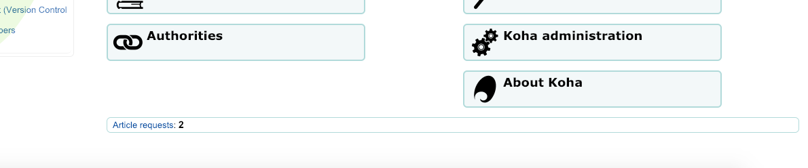
館員可以選擇進入繼續執行的程序。
New requests are in the ‘New’ tab.
第一步館員要處理請求 時，先把請求移至處理分頁並提醒其他館員該請求正在處理中.在操作列中，點撃選單並選擇’處理請求 ‘.請求將會移至處理分頁中。
备注
Setting an article request to ‘Processing’ will send a notification to the patron. The notice sent is based on the AR_PROCESSING template. The content of this notification can be customized in the Notices and slips tool.
If for any reason, a request cannot be processed right away (for example, if the title is currently checked out), the status can be changed to ‘Pending’. This will send a notice to the patron indicating the request has been received and seen, but has yet to be processed.
备注
Setting an article request to ‘Pending’ will send a notification to the patron. The notice sent is based on the AR_PENDING template. The content of this notification can be customized in the Notices and slips tool.
然後，館員到書架取出該被請求的論文。
Once that is complete, staff can print the article request slip and staple or paper clip it to the article. In the actions column, you can select the dropdown and select print slip.
备注
The slip used is based on the AR_SLIP template. The content of this slip can be customized in the Notices and slips tool.
最後，從行動下拉選單點選論文請求完成，等同告知讀者到館提取。
從處理分頁中自動移除該論文請求。
备注
Completing an article request will send a notification to the patron. The notice sent is based on the AR_COMPLETED template. The content of this notification can be customized in the Notices and slips tool.
If, for any reason, an article request must be cancelled, staff can choose the ‘Cancel request’ option from the ‘Actions’ button.
备注
Cancelling an article request will send a notification to the patron. The notice sent is based on the AR_CANCELED template. The content of this notification can be customized in the Notices and slips tool.
备注
也可以通過選中要處理的請求旁邊的框或點擊’全選’來批量執行操作，然後從表格頂部的操作選單中選擇新狀態
逾期
此報表將列出您圖書館所有的逾期館藏。
警告
對於讀者眾多的圖書館，此報表可能極為費時。
Large libraries can choose to filter the report before it runs by setting the FilterBeforeOverdueReport system preference to ‘Require’.
备注
You can customize the columns of this table in the ‘Table settings’ section of the Administration module (table id: circ-overdues).
以報表左方找到的選單選項可以篩選報表。
备注
按 ‘顯示目前借出的館藏’ 盒，把逾期報表改為借出報表。將顯示所有的到期日的借出館藏。
The report result can be downloaded via the ‘Download file of displayed overdues’ link or the ‘Export’ button at the top of the table.
逾期罰款
此報表將列出被罰款的逾期館藏。
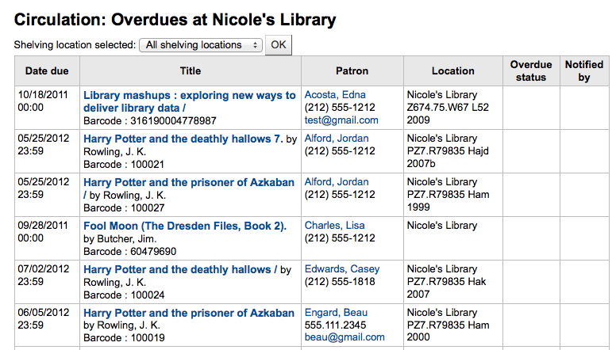
可使用上方的下拉式表單，限制表單的範圍為圖書館特定書架。改變您的圖書館 或登入其他圖書館，就能看到其他圖書館的逾期罰款。
重要
若沒有罰款或未執行 罰款工作排程 罰款排程，此報表就沒有資料。
待決的現場借出
If you are using the on site checkouts functionality (OnSiteCheckouts) then you’ll have a report to view all items that are currently checked out on site.

此清單將列出到期日 (逾期則以紅色顯示)、借出者、館藏資訊與館藏所在地。
追蹤館內使用
很多圖書館追蹤館藏在館內的使用情況。
說明
This is different from tracking on-site usage. In-house use is the use of items in the library by patrons without them having to check them out. On-site use is the use of items on site that must first be checked out. To learn more about on site usage please review the OnSiteCheckouts preference.
Koha 以兩種方式取得館內使用的資訊。新增 統計館員 是其中一個選項。將移動過的館藏視為館內使用的館藏，借給統計館員：

Koha 不會記錄其為 ‘借出’ 而把它們視館內使用：

對所有在館內使用的館藏重複此步驟，確保正確統計館內使用。
The other way to record local use of items is to set your RecordLocalUseOnReturn preference to ‘Record.’ Then whenever you check an item in that is not checked out and not on hold a local use will be recorded.

說明
If you have RecordLocalUseOnReturn set to ‘Record’ you can still use your statistical patrons to record local use as well.
自助借出
Koha comes with a very basic self checkout module. To enable this module you need to set the WebBasedSelfCheck system preference to ‘Enable.’ To use this module you have to log in as a staff member with self_check permissions.
說明
為自助借出模組新增一個專屬 館員 就可以了，不必以真的館員身份登入一整天
There is no link to the Self checkout module, but a simple addition to the OPACUserJS system preference can add one.
$(document).ready(function(){
$("#login .btn").parent().after("<p><a href=\"http://YOUR_KOHA_OPAC_URL/cgi-bin/koha/sco/sco-main.pl\" target=\"_blank\">Self-Checkout</a></p>");
});
**Important**
The code above has line breaks added to make it more readable,
please be sure to enter the above as one line in when putting it in
the system preference.
在登入頁面下方，該連結看起來是這樣：

也可以 http://YOUR_KOHA_OPAC_URL/cgi-bin/koha/sco/sco-main.pl 進入該模組
When on the self checkout page, depending on the value in your SelfCheckoutByLogin system preference you will be asked to enter your cardnumber

或姓名與密碼：
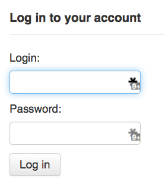
登入自助借出模組後，再要求掃瞄借出的館藏條碼

掃瞄館藏的條碼，將出現在條碼盒之下

所有欲借的館藏都掃瞄完畢，按下 ‘完成’ 鈕。接著提示列印收條，再登出自助借出模組。

出現錯誤時，螢幕指示讀者回到櫃台辦理借出手續。即使允許凌駕流通功能，亦可能發生錯誤。祗有館員才能凌駕流通的鎖定，讀者必須回到櫃台，由館員辦理借出手續。

自助借出
必須先設定 :ref: SelfCheckInModule <selfscheckinmodule-label> 系統偏好為 ‘啟用’，才能使用自助借出模組。
Then, you will have to create a patron with the self_checkin_module permission.
說明
Create a staff patron specifically for this action so that you don’t leave a real staff client logged into a computer all day. You can give this patron only the aforementioned permission so it cannot be used for anything else.
做好之後，就能進入自助借出頁面：http://YOUR_KOHA_OPAC_URL/cgi-bin/koha/sci/sci-main.pl
以具有自助借出權限的館員身份登入
設定電腦或工作站，並以自助借出館員登入，讀者就能夠自行辦理借出工作。

讀者可以掃瞄或鍵入條碼，再按 ‘新增’ 或歸位鍵。
說明
大部份的條碼機自動加入歸位訊號。
掃瞄或鍵入館藏條碼後，再按 ‘還入’ 鈕，就能即刻還入所有館藏。
重要
讀者未按 ‘還入’ 鈕，館藏仍在其帳號內，未還入。
重要
自助還入模組不會警示逾期有罰款的館藏、也不提示被別人預約的館藏、以及留存帳號內的訊息。

可以按 ‘完成’ 鈕，回到自助還入主畫面。
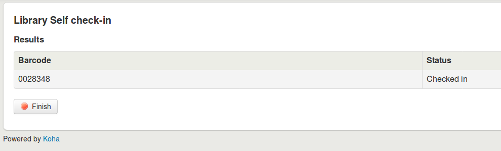
說明
If the patron doesn’t click ‘Finish’, the screen will refresh after the timeout period specified in the SelfCheckInTimeout system preference.
說明
即使讀者未按 ‘完成’ 鈕，依然算是還入的館藏。
You can customize the look of your self check-in screens by using the SelfCheckInUserCSS system preference or the SelfCheckInUserJS system preference.
You can add content, like instructions on how to use the self check-in system for example, by using the SelfCheckInMainUserBlock system preference.
登入 Koha 資料庫的 action_logs 表單，可以查看自助還入模組的交易資訊。可以從 建立客製化報表 取得需要的統計資訊。
離線流通公用程式
Koha 允許以下列三種方式辦理離線流通。
Koha 內的離線流通
If the AllowOfflineCirculation preference is set to ‘Enable’ the library staff can continue to perform circulation actions within Koha when the system is offline. You will want to visit http://your-koha-staff-client-url/cgi-bin/koha/circ/offline.pl at least once while online and bookmark that page. That is the page you will go to when you are offline.
重要
此離線介面採用 HTML LocalStorage，依瀏覽器及使用者的設定，每個網域容量限制在 2.5MB 或 5MB 之內。大型圖書館無法以此方式同步其資料，建議使用:ref:Firefox <firefox-plugin-label> 或 Windows 的離線流通外掛程式。
設定
第一次使用離線流通功能前，先進入流通模組，點選 ‘建立離線流通介面’
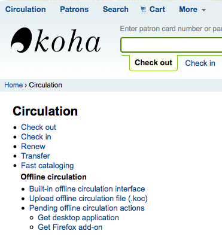
點選畫面右方的 ‘同步’ 連結，就能同步流通電腦與伺服器的資料。

重要
此離線介面採用 HTML LocalStorage，依瀏覽器及使用者的設定，每個網域容量限制在 2.5MB 或 5MB 之內。大型圖書館無法以此方式同步其資料，建議使用:ref:Firefox <firefox-plugin-label> 或 Windows 的離線流通外掛程式。
允許您下載本地的讀者與流通資料。勾選頁面上方的 ‘下載記錄’ 連結，同步您的資料。

資料下載之後，您將在資料集右方看到同步的最新日期。

定期執行此作業以備發生意外的斷線。
流通
離線時進入 Koha 的離線流通頁面 (http://your-koha-staff-client-url/cgi-bin/koha/circ/offline.pl) 並按 ‘借出’ 或 ‘還入’ 執行離線作業。
在 ‘借出’ 頁面以條碼或名稱搜尋該讀者確認完成借出。點選讀者後，出現罰款與借出等讀者資訊。
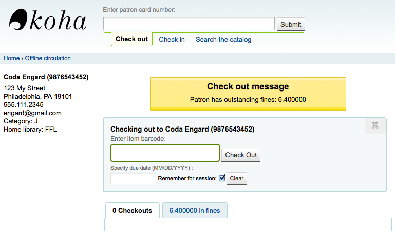
借出時，掃瞄館藏的條碼，鍵入到期日。若未鍵入到期日，Koha會提醒您。
館藏借出後將顯示在讀者資訊頁面。
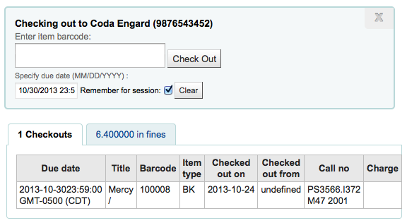
Koha 離線上傳
系統恢復上線後，進入離線流通模組的同步頁面，並點選 ‘上傳交易’

上傳檔案後，按右方的 ‘檢視待處理離線流通作業’ 鈕。

按 ‘檢視待處理離線流通作業’ 鈕後，進入上傳至 Koha 的 *.koc 檔案，檢視其摘要。

離線流通檔案上傳之後，再選擇全部或部份處理，把它們匯入Koha。
按下「處理」鈕後，Koha 將逐一處理儲存的離線流通交易記錄。每個離線流通交易，其狀態可能為：
“成功” 若正確轉移館藏
“找不到借閱者” 若借閱者號碼不正確
“找不到館藏” 若館藏條碼錯誤
“館藏未借出” 若還入可借出的館藏
做好後，將出現所有交易的摘要

Firefox 插件
There is an offline circulation tool that you can add to your Firefox browser as an add-on. To do so, just go to https://addons.mozilla.org/en/firefox/addon/koct/ page and click on the “install now” button. You may have to confirm the installation, just click on “install now” and then restart Firefox to complete the installation.
Once you have installed the plugin and restarted Firefox, you will see the Koha logo in the download bar at the bottom right of Firefox.

按該商標將以自己的視窗開啟該工具。

The plugin consists of three sections:
The ‘Check out’ section is where you check out items
The ‘Check in’ section is where you check in items
The ‘Transactions’ section is where you can track the transactions done while in offline mode
The transactions will keep information until you empty it.

If you’d like to clear the transactions, click the ‘Clear’ box before hitting the ‘OK’ button.
The first thing you want to do then is to set up the plugin. Proceed to the settings page, linked in the top right of the page or under ‘Configuration page’ in the Transactions section.
Answer the 5 questions presented:
伺服器 = 館員介面的 URL
使用者名稱 = 館員登入帳號
密碼 = 館員帳號密碼
分館代碼 = 館員所屬分館的代碼
Commit Type = If you select ‘Send data to Koha’, your account will need to be approved by an administrator. If you select ‘Apply directly to Koha’, your account will not need to be approved.
重要
必須關閉外掛視窗，再按附加欄的 Koha 商標重新開啟外掛，就能儲存這些設定。
說明
可新增一個館員帳號，專門做離線流通的工作。不論誰輪值流通工作，都以同個帳號登入。在這個情況下，可以使用已經擔任流通的群組登入。
設定完成後，就可以開始借出與還入作業。
借出：
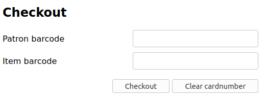
Under the ‘Checkout’ heading
掃瞄讀者條碼
掃瞄館藏條碼
Click ‘Checkout’
還入：

Under the ‘Checkin’ heading
掃瞄館藏條碼
Click ‘Checkin’
Each time, you check out or check in an item, a new transaction is recorded in the local plugin database. This is recorded in the Transactions section bellow.

說明
維持在離線且未把交易納入 Koha，其狀態就是 “在地”。
恢復連線後，應立即將交易資料上傳至 Koha。在此之前，還有幾點事項該注意。
因為沒有連結至 Koha 資料庫，預約需要再處理才會生效。若還入的館藏已被預約，預約仍掛在該館藏上。無法在還入時確認預約，預約仍在該館藏上，稍後才能處理。若還入少許館藏，還可以保留全部的紀錄。若還入館藏太多，可以使用預約佇列查看架上的預約情況。
同樣的，若讀者證過期，離線流通工具不會知道它，仍可借出給被停權的讀者。
有兩個選項處理這些資料
Apply to Koha
If you checked in/out on more than one computer at the same time, what you want is to process every transaction consistently. Let’s say for instance that one patron checked a book out on one computer and then checked the same book in on another computer. To be consistent, you need to record the check out first and then the check in. Not the opposite! To do so, you need to group every transaction in one place, sort them all and then, process everything. So, you need to use the “Apply to Koha” option from every plugin/computer you worked with. This way, the log will go to Koha and be accessible from the Offline Circulation page.

到那裡： 流通 > 待處理離線流通內容
離線流通檔案上傳之後，再選擇全部或部份處理，把它們匯入Koha。
按處理鈕後，Koha 將逐一處理儲存的離線流通交易記錄。每個離線流通交易，其狀態可能為：
“成功” 若正確轉移館藏
“找不到借閱者” 若借閱者號碼不正確
“找不到館藏” 若館藏條碼錯誤
“館藏未借出” 若還入可借出的館藏
做好後，將出現所有交易的摘要
直接應用
若在同一部電腦執行所有的流通作業，所有的交易都已經排序好，可以選擇 “直接應用”
狀態欄將更新，讓您知道交易是否已被應用
“成功” 若正確轉移館藏
“找不到借閱者” 若借閱者號碼不正確
“找不到館藏” 若館藏條碼錯誤
“館藏未借出” 若還入可借出的館藏
Offline circulation tool for Windows
離線流通工具可從此下載：https://github.com/bywatersolutions/koha-offline-circulation/releases
必須執行 經由工作排程的檔案產生器 才能生成 borrowers.db 檔案供上傳至視窗工具。
Upload offline circulation file
此 視窗版的離線流通工具 將產生 KOC 檔案，恢復連線時上傳至 Koha。
點選流通選單的 ‘上傳離線流通檔案(.koc)’
瀏覽電腦裡的 *.koc 檔案

檔案上傳後，勾選處理該檔案
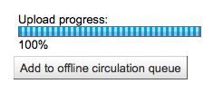
完成後，就能夠上傳另一個檔案或保留離線流通的工作。

按 ‘檢視待處理離線流通作業’ 鈕後，進入上傳至 Koha 的 *.koc 檔案，檢視其摘要。
離線流通檔案上傳之後，再選擇全部或部份處理，把它們匯入Koha。
按處理鈕後，Koha 將逐一處理儲存的離線流通交易記錄。每個離線流通交易，其狀態可能為：
“成功” 若正確轉移館藏
“找不到借閱者” 若借閱者號碼不正確
“找不到館藏” 若館藏條碼錯誤
“館藏未借出” 若還入可借出的館藏
做好後，將出現所有交易的摘要